BigQuery is a data warehouse that is used for analytic processing of large amounts of data at low costs using commodity hardware. In this lab, you will import some data into BigQuery and use a number of its different interfaces to perform queries.
Begin by enabling the service and API. First, list all of the services available to enable via:
gcloud services list --available --filter=bigqueryThen, enable the BigQuery API as well as the BigQuery Connection API. This will be used to programmatically access the service.
gcloud services enable ...In Cloud Shell, copy a file containing the name, gender, and count of newborn babies in 2014 from the course site.
wget https://thefengs.com/wuchang/courses/cs430/yob2014.csvThen, examine its format. Determine the data-type for each field. This will be needed when instantiating a table using the file. Then, use wc to determine how many names it includes.
head -3 yob2014.csv
wc -l yob2014.csvUsing a web browser, download the file to your local machine.
Go to the web console and visit BigQuery. In the explorer window, select your project and then "Create dataset".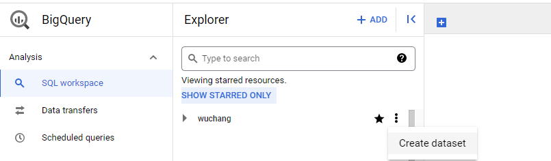
Give the dataset an ID of yob and specify its region as us-west1. Back in the console, expand out the project to show the dataset. Use the dropdown menu to create a table within the dataset.
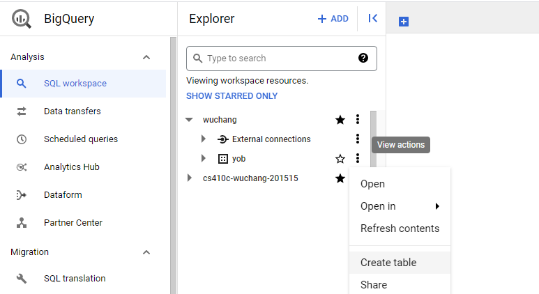
We will be creating a table by uploading the CSV file we previously retrieved from the course web site. Specify this, then locate the CSV file you previously downloaded, and select the CSV format (comma-separated values). Under "Destination", name the table yob_native_table.
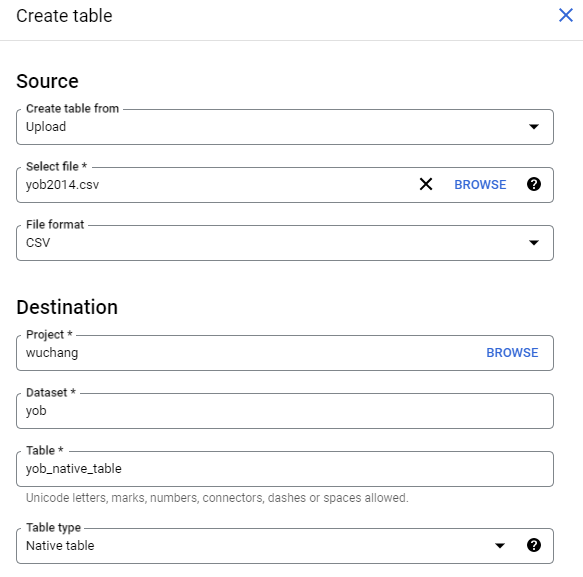
Then, under "Schema", add fields that correspond to the columns in the file including their types (in this case string or integer). 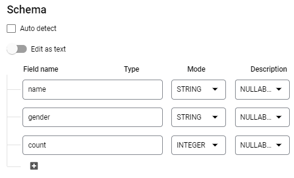
Create the table. Click on the table created within the dataset, then click the "Preview" tab to validate that the table has been created properly.
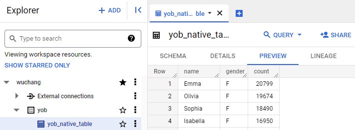
Then, click on the "Details" tab.
- Take a screenshot of the table's details that includes the number of rows in the table.
BigQuery supports multiple methods for querying the data. We'll go through several of them.
Via web console
Select the table and compose a query that lists the 20 most popular female names in 2014. Table names must be escaped with back-ticks in the UI. Notice that when given a valid query, the validator shows a green checkmark to show you how much data you will access when the query is run. It is important to examine this for every query so you can eventually learn to optimize costs.
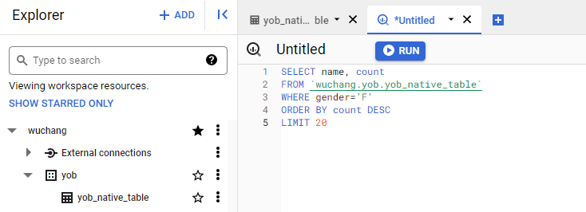
Run the query.
- Screenshot the query results and include it in your lab notebook
Via command-line bq command
BigQuery can also be queried from Cloud Shell using the SDK's bq command. Bring up a Cloud Shell session and run a query to get the 10 least popular boys names in 2014. Note that the tool requires the table name to be delimited by square brackets with the colon and period separating the project name, dataset name, and table name as shown below.
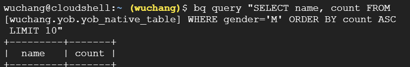
- Screenshot your results and include it in your lab notebook
Via interactive bq session
bq can be run interactively in Cloud Shell
bq shellAt the prompt, you can then enter your query. Run a query to find the 10 most popular male names in 2014.
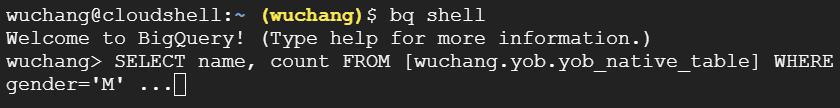
- Screenshot your results and include it in your lab notebook
Finally, run a query on your name. How popular was it?
- Screenshot your results and include it in your lab notebook
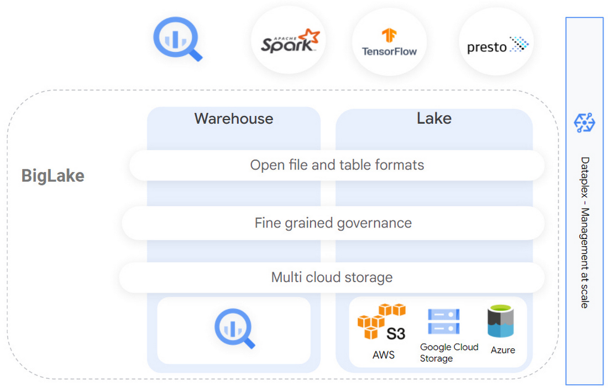
The prior lab creates a table within the BigQuery data warehouse by extracting data from a file that is uploaded and importing it into BigQuery's storage layer (e.g. the left half of the above figure). This results in two copies of the data: within the CSV and within the warehouse. The data lake approach takes an alternate approach in which data is kept in its original location and format with the extraction being done as queries access the data (e.g. the right half of the above figure). As both modes of operation are supported on the platform, we'll repeat the steps from the prior lab, but utilize a data lake approach for creating tables and performing queries on the data.
In Cloud Shell, ensure you still have a copy of the original CSV file that was downloaded, then create a storage bucket in location us-west1 and copy the file into it.
gsutil mb -l us-west1 gs://<BUCKET_NAME>
gsutil cp yob2014.csv gs://<BUCKET_NAME>/We'll be using Google's BigLake support to create an external table within BigQuery to access data in the file we have stored in this bucket, specifying a connector to handle the extraction and querying of the data at run-time.
Specifically, we will specify the location of the CSV file in the storage bucket, then create an external table that points to it using a BigLake connector. To do so, go back to BigQuery, select the dataset you created, and begin the steps to create another table within it. Specify the table is being created from the file stored in the storage bucket and that it will be an external table. Name the table yob_biglake_table and create a new connection for it as shown below.
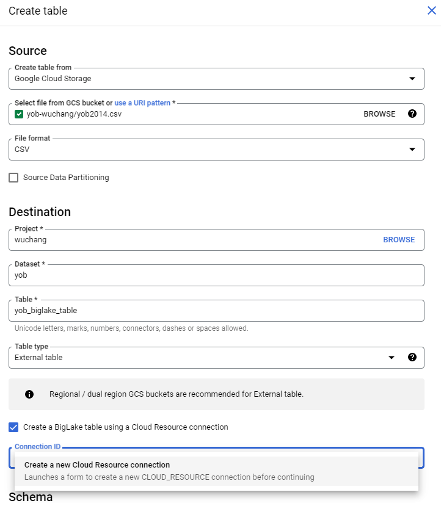
In configuring this external data source, specify a Connection ID of biglake and the region as us-west1 (where the storage bucket is located), then create the connection.
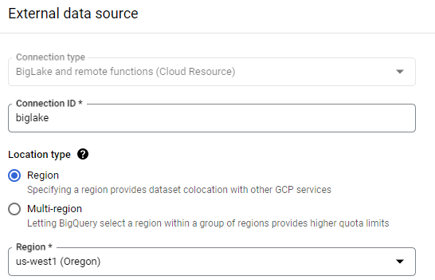
Finally, specify the schema fields as before, before creating the table.
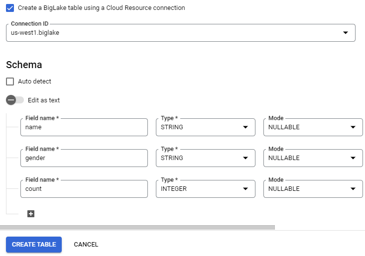
We have created a connector within our BigQuery table that will retrieve data from the CSV file we stored in a storage bucket. However, in order for the connector to do so, it requires appropriate permissions to be given to it. Go back to BigQuery and find the biglake connection we have just created under the project's "External connections" as shown below. Select the connection and find the service account associated with it.
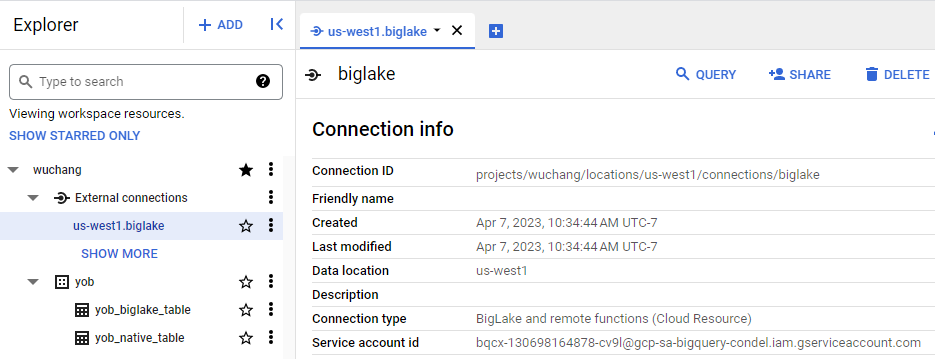
Copy the service account address, then visit the IAM console. Begin steps to grant access to this service account to view storage objects.
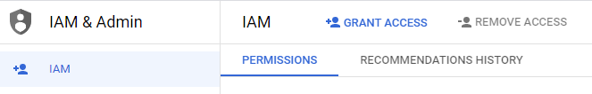
Grant "Storage Object Viewer" access to the service account as shown below:
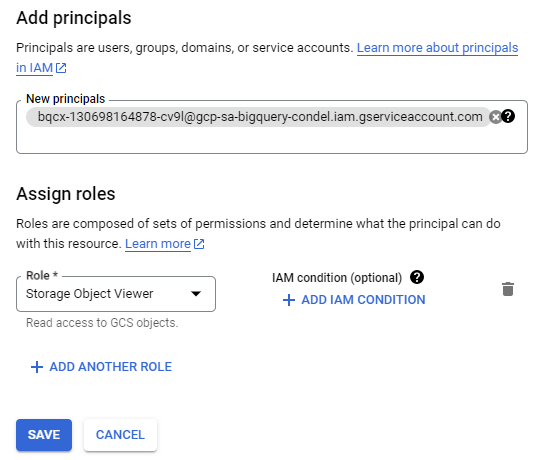
We will now query the external table as done before with the native table. Select the external table and compose a query that lists the 20 least popular female names in 2014.
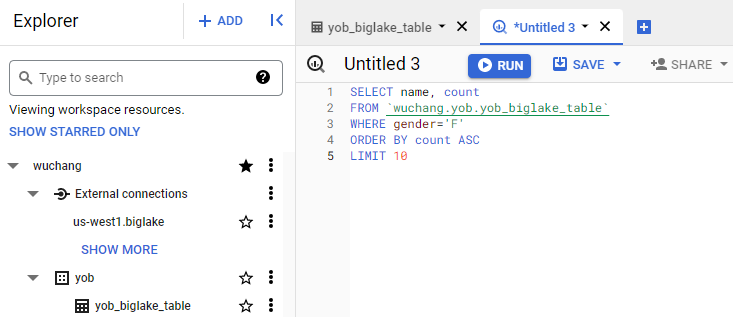
Run the query.
- Screenshot the query results and include it in your lab notebook
In the BigQuery console, delete the yob dataset and biglake external connection.
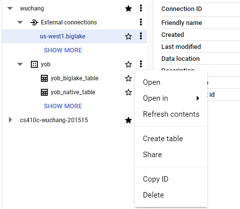
Then delete the storage bucket.
gsutil rm -r gs://<BUCKET_NAME>